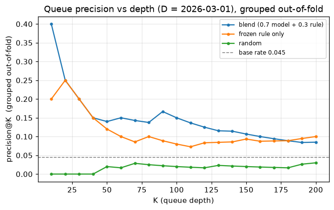
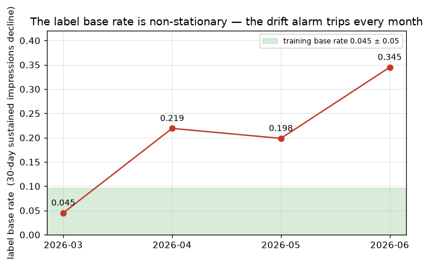

FLYRANK ML INTERNSHIP CAPSTONE · APPLIED SEARCH INTELLIGENCE
Problem. A FlyRank content strategist has time to review a few dozen pages per client each week; the practical question is not "will this page decline?" but "which pages should a person open first, and in what order?" Data. The FlyRank internship warehouse — ~78.8M pseudonymised daily search rows, 104 clients, 519,606 content items, 2025-01-27 to 2026-06-30 — evaluated at decision date 2026-03-01 on 58,583 eligible pages across 23 clients (label base rate 0.045). Method. A frozen transparent hand-rule as the baseline; logistic-regression and random-forest rankers on ~39 features knowable strictly before the decision date; grouped 5-fold cross-validation by client, a two-month walk-forward, one blind month, and a planted-leak audit. Evidence. The learned rankers roughly double the hand-rule on grouped cross-validation (average precision 0.15 vs 0.09; random 0.08), and on the sealed June 2026 month the random forest reaches average precision 0.44 — above random (0.34) and the frozen rule (0.39) but only level with a one-line "already-dipping" heuristic (0.44); the label base rate is non-stationary, moving 0.045 to 0.345 over four months. Scope. One content operation, one 17-month snapshot, GSC-visible pages only, churn-censored population, no causal design — this is decision-support ranking of human review effort, not a per-page prediction and not evidence that a refresh changes an outcome.
A content strategist opens their weekly queue for a client account. It lists fifty pages, ordered; for each, a short reason ("position slipping, reach thinning") and a suggested action. They work down the list, open each page, check the reason against the trend they see, and decide whether to refresh it. The queue supplies the order and the evidence — not the edit. This paper reports a ranker for that queue and evaluates it the way it would be used: grouped by client, walked forward in time, and finally tested once on a sealed month.
Source and period. The FlyRank internship warehouse (hosted Parquet, queried in place with DuckDB, never
downloaded): ~78.8M daily fact rows, 104 clients, 519,606 content items, 2025-01-27 to 2026-06-30. One row of the
analysis is one (content page × monthly decision date). The decision date is D = 2026-03-01; features are
aggregated over [D−90d, D), the label over [D, D+30d] — strictly non-overlapping.
Label. label_decline = 1 if the page's impressions over the 30-day label window run below 75% of
its trailing-90-day pace and the second half of the label month is no higher than the first (a sustained decline,
not a one-day spike). It is an observed outcome measured in a window strictly after every feature.
Eligibility. A page needs ≥ 100 search impressions in the prior 30 days (a volume floor — a page going 60 to 30 impressions is "−50%" but meaningless); its client needs ≥ 90 days of history before D; pages already in freefall are excluded (that is a recovery problem, out of scope). The funnel: 321,546 pages in the feature window → 81,521 (volume floor) → 73,326 (client history) → 60,265.
The label-quality fix. Three clients stopped reporting after February; every one of their pages therefore had zero label-window impressions and was auto-labelled declined — panel dropout, not a real decline, and it was inflating the baseline's score. Removing them: 60,265 → 58,583 pages / 23 clients, base rate 0.072 → 0.045. This exclusion uses information from the outcome window — a churn-censoring choice, disclosed in Limitations; results describe surviving portfolios.
Excluded on purpose. trend_direction / trend_pct / is_declining_label
(the label is derived from them); any column whose window overlaps the label; the query-level table (its single fixed
90-day window sits after every development decision date); FlyRank product flags (health_score,
priority_score, action_type — not shipped, and decision-derived); GA4 columns (only ~4%
of rows carry real GA4 data); last_optimized_date (populated only from ~2026-04). IDs are pseudonyms used
for grouping only. No client names, domains, URLs, page titles or raw queries appear anywhere in the artifacts.
Frozen baseline. A transparent hand-rule: 0.40·traffic_softening + 0.30·position_slip +
0.30·reach_thinning, each component a 0–1 percentile rank, no fitted weights. A fourth candidate
— page visibility — was dropped before freezing because a signal check showed bigger pages declined
less in this data. It is a fair comparison: scored on the same eligible slice, the same forward label, the same
metric, and re-scored on the same grouped-CV test folds as the models.
Models. Simplest to strongest: a majority-class dummy, logistic regression (scaled,
class_weight="balanced"), a depth-3 decision tree, and a random forest (200 trees, depth 10,
min_samples_leaf=25, class_weight="balanced_subsample"). All random_state=42.
Features (~39, all pre-decision). GSC feature-window aggregates (impressions, clicks, impression-weighted
position, impression-days) and engineered ratios (softening ratio, position gap, reach ratio); static content metadata
(age, word and character count, content type, competition), each with a has_* missingness flag —
ML-04 showed missingness tracks content type, so a blind fill would encode the category.
Grouped 5-fold cross-validation on client_hash_id (seed 42) — a client's pages never span
train and test, so a model cannot memorise a client's quirks and have it counted as skill. A random 5-fold split is run
alongside; the gap between the two is itself a measurement of memorisation. A two-month walk-forward trains the model
once at D = 2026-03-01 and evaluates it unchanged at 2026-04-01 and 2026-05-01. One sealed month (June 2026) is read
exactly once, by a single notebook cell (w06_validation_audit.ipynb cell-4c), after development was frozen;
its metrics are committed to ml09_validation_audit.json.
Leakage controls. The timeline is drawn: every feature aggregate is report_date < D, freshness
uses content_updated_date < D only. No product flags. A planted-leak test: adding the label-window
column imp_label to the feature matrix and retraining moves average precision from 0.15 to 0.56 —
the harness catches it; the column is then removed and the honest number kept. No scored feature correlates with the
label above 0.11 in absolute value.
| ranker | precision@50 | precision@5% | avg precision | ROC-AUC | per-client p@10 |
|---|---|---|---|---|---|
| random | 0.064 | 0.077 | 0.081 | 0.499 | 0.133 |
| stale-visible rule | 0.088 | 0.087 | 0.082 | 0.501 | 0.153 |
| frozen hand-rule | 0.116 | 0.105 | 0.088 | 0.490 | 0.212 |
| dummy (prior) | 0.064 | 0.086 | 0.080 | 0.500 | 0.129 |
| logistic regression | 0.228 | 0.224 | 0.150 | 0.612 | 0.236 |
| decision tree (depth 3) | 0.084 | 0.098 | 0.090 | 0.537 | 0.150 |
| random forest | 0.212 | 0.217 | 0.152 | 0.643 | 0.269 |

On the contaminated slice, before the label-quality fix, the frozen hand-rule scored precision@50 = 0.98 — and its top-50 was 98% one client's data dropout. On the cleaned, client-grouped slice the same rule scores precision@50 = 0.12. The headline was an artifact.
Ranking by "biggest recent drop" — the obvious watchlist — scores average precision below the base rate in the development month. A page that just dropped tends to bounce; the naive list is buying mean reversion.
The same random forest scores average precision 0.199 / ROC-AUC 0.808 under a random 5-fold split, versus 0.149 / 0.650 grouped; its fold-to-fold spread tightens from ±0.15 to ±0.02. The random split reports a falsely confident number and hides the between-client variance. Its train-versus-out-of-fold gap (average precision 0.33 vs 0.15) shows some client-specific memorisation, expected with ~18 training clients per fold.
At the higher April and May base rates (0.22, 0.20) the March-trained random forest holds up: average precision 0.34 and 0.24, above the frozen rule (0.22, 0.25) and roughly level with the naive heuristic. On the sealed June 2026 month (base rate 0.345, read once) the random forest reaches average precision 0.44 versus random 0.34 and the frozen rule 0.39 — it beats both — but the one-line "already-dipping" heuristic also scores 0.44. The model's ordering survives a blind month; its margin over a one-liner does not.

The output is an action playbook: a queue of all 58,583 eligible pages scored by
final_score = 100 · (0.70 · model_out-of-fold_score + 0.30 · frozen-rule_percentile)
— the model we do not fully trust is anchored to a rule an editor can read.
refresh (43),
review_position (5,637), review_metadata (3), monitor (20,885),
monitor_only (31,944), watchlist (71).durable_riser_hold (traffic is actually
rising → never refresh, route to monitor) and low_volume_position_only (position noise on a small
page → watchlist). About fifteen of the top fifty are held for human judgement before an editor sees them.content_age_days, the model's top
feature, shows major drift by May). A tripped trigger pauses the next weekly queue pending human re-review and a
refit; it never rescinds actions already taken.Environment: Python 3.12 · scikit-learn 1.9.0 · numpy 2.5.1 · pandas 3.0.5
duckdb 1.5.5 · matplotlib 3.11.1 · seed 42 (every stochastic component)
Run (fresh clone):
1. HF READ token for FlyRank/internship-warehouse -> .env at repo root (HF_TOKEN=hf_...)
2. run work/notebooks/w03_data_contract.ipynb ... w07_action_playbook.ipynb in order
(each writes its work/outputs/mlXX_*.json receipt)
3. work/notebooks/capstone.ipynb runs OFFLINE from the committed receipts + figures
and reproduces every number on this page
| result | regenerated by |
|---|---|
| data contract / eligibility funnel | w03_data_contract.ipynb → ml04_contract_checks.json |
| frozen baseline metrics | w04_baseline_score.ipynb → ml07_baseline_metrics.json |
| Table 1 (grouped 5-fold comparison) | w05_model.ipynb → ml08_model_comparison.json |
| random-vs-grouped, walk-forward, sealed June | w06_validation_audit.ipynb (cell-4c reads June once) → ml09_validation_audit.json |
| Figure 1, Figure 2 | w07_action_playbook.ipynb exports cell → work/figures/*.png |
| action queue + playbook | w07_action_playbook.ipynb final cell → ml10_playbook.json |
The sealed-evaluation receipts are both committed: the frame builder is
w06_validation_audit.ipynb cell-4c (the only cell that reads month=2026-06), and the metrics
file is ml09_validation_audit.json. "Evaluated once, blind" is checkable from the repository, not taken on
faith.
Built on the FlyRank ML Internship dataset — flyrank.ai. Crediting the data source is standard research practice and a required section; it does not replace citations.